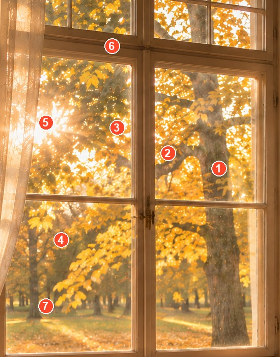
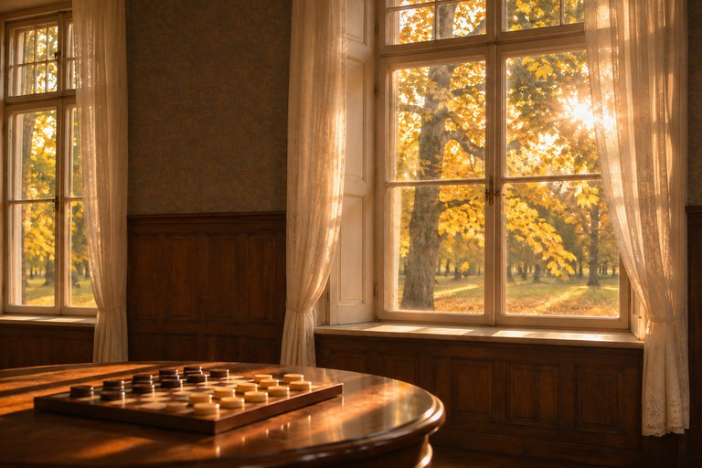
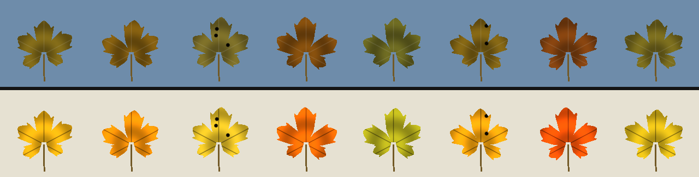
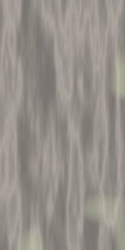

A maple outside the library's windows
Task 107, the manor library, 2026-11-21. Research only: no build, no renders, only small Pillow
previews (src/previews.py). Target: design/manor/concepts/library-home-01.png,
possibly mirrored. Builds on task 105 (the tree and its baked shadow) and the window-view plan
(build/notes/window-view/, steps W4 and W6).
In short. Draw the tree as real geometry, grown by our own generator. Keep
trees::grow, but grow the whole visible crown at real size. Trunk and limbs become tubes
with a procedural bark tile. Twigs become thin ribbons with phone-wire antialiasing. Leaves become
instanced cards from a procedural Norway maple atlas, drawn with alpha-to-coverage under the 4x MSAA.
The tree draws after the room's opaque pass, so only pixels seen through the glass pay. The sun lights
the leaves from behind, with each leaf's sun and sky visibility baked once from a voxel grid of the
crown.
One tree feeds the room's shadow bake, the probes and the picture. One wind field moves both: the
vertex shader moves each leaf by the same tree_shift plus branch_sway that
the shadow lookup uses, at the leaf's own map point, so a leaf and its fleck move by one vector.
Cost, estimated: about 0.2 to 0.4 ms a frame at 3024 × 1890 in the high tier, the same per drawn frame in the standard tier (still), about 10 MB, and 20 to 60 ms at room-on. Phones get one card, rendered once from the same geometry. That card replaces W4's CPU-baked layers and also serves the floor's mirror and the blurred end of a focus pull.
A maple is no harder than an oak; the oak's crooked limbs and deep bark are harder. So, a Norway maple.
1. The reference


2. What makes it read as a Norway maple at 5 to 10 m
| Cue | The tree | What we do |
|---|---|---|
| Crown | Dense, broad, rounded, about as wide as tall (20-30 m tall in the open, the crown 15-20 m across). Short trunk, forking low into a few ascending limbs. | An ellipsoid envelope. Limbs fork at 3-4 m. Branches outside the envelope are pruned. |
| Leaves in a shell | Shade-tolerant: a dense outer layer about 1-2 m deep. The inside is dark and shows the limbs (Horn's monolayer tree). | Leaves only on twigs in the outer shell, none in the core. This is what makes the gaps and the dark inner crown. |
| Branching | Opposite: buds and shoots in pairs. Fairly straight limbs, fine twigs. | MAPLE.paired, as today. Low crook. |
| Leaf | Palmate, five lobes with a few long sharp teeth, 8-16 cm wide. A long stalk, about as long as the blade. Turned out from the crown into a mosaic. | Real size: about 3-4.5 world units. Today's shell tree has leaves about 0.6 units (2 cm), sized for the shadow. The stalk length varies. The blade faces out and up. |
| Autumn colour | Mostly clear yellow, sometimes orange. Turns branch by branch, from the outside in; yellow-green inside. Tar spot (Rhytisma acerinum) gives black blotches. | A tint for each twig, from its seed and how exposed it is; a little variation for each leaf. Two of eight atlas leaves spotted. |
| Translucency | Lit from behind, a leaf transmits a fair share of the yellow and red and little blue, so it glows deeper and more saturated than from the front. The veins show darker. Leaves behind other leaves are darker orange. | The leaf's back colour comes from its own atlas channel. The sun reaching each leaf comes from the crown's density. |
| Bark | Grey-brown, shallow narrow ridges that interlace. Not plates (sycamore), not deep furrows (oak). | A procedural tile, ridged noise stretched along the stem, with a little lichen. |
Sources: Acer platanoides (Wikipedia), Woodland Trust, RHS, European Atlas of Forest Tree Species (JRC), Rhytisma acerinum; Horn, The Adaptive Geometry of Trees (Princeton, 1971) for monolayer crowns; Jacquemoud and Baret's PROSPECT leaf model (1990) for transmission. In Estonian parks the Norway maple (harilik vaher) is the common maple, and it turns yellow, as the concept does.


3. Methods compared
Growing the tree
| Method | For | Against |
|---|---|---|
Recursive levels, Weber and Penn
(1995): ours, trees::grow |
Exists and is tested. Each branch has its own dice, so pruning changes nothing else. Easy control of the hero limbs (trunk place, fork height). | The crown fills unevenly, and branches can cross. Leaves sprayed in a ball (spray)
read wrong when seen. |
| Space colonisation, Runions, Lane and Prusinkiewicz (2007) | Fills an envelope evenly with natural spacing and no crossings. The crown's shape is the envelope. | New code. Less direct control over single limbs. 10-50 ms for a few thousand points with a grid. |
| Self-organising, Palubicki et al. (2009) | The most natural: light competition shapes the shell. | The most code and tuning. More than we need through three windows. |
| SpeedTree-style generators by level, with hand-placed hero limbs (docs); ez-tree (MIT, three.js) as a small open example | Industry practice: procedural levels plus hand control, which is what ours already is. | Tools, not code we can take; ez-tree only as a reading of how a lean generator meshes and places leaves. |
Choice: extend ours. Add an envelope (prune outside it), leaves on twig nodes in opposite pairs with stalks (no spray ball), real sizes, and culling by "seen or casting through a window" instead of "casting" alone. Space colonisation for levels 2-4 only if the crown still reads clumpy.
Drawing it
| Method | Look | Cost | Verdict |
|---|---|---|---|
| Layered cards from a bake (W4) | Flat inside each layer; parallax only between three layers; leaves can't turn or flutter. | Very low. | Phones, the mirror, and the blurred end of a focus pull. |
| Octahedral impostors (Brucks) | Good from any side. | Atlas memory for many views. | Not needed: we only see the tree through one wall, from a few metres of room. |
| Leaf-cluster cards (3-6 leaves a card) | Good from afar; flat clusters show at 5 m. | About 1/4 of the cards. | Standard tier on tablets, and the LOD while blurred. |
| Single leaf cards + tube wood | Real: each near leaf readable, turned, fluttering. | About 25k cards and about 80k wood triangles in view. | Recommended for high and standard on desktops. |
At the table's camera a 12 cm leaf 6 m away spans about 1.1°, about 60 px at Retina. Leaves are seen one by one in focus, so cards from a bake are too flat for the high tier.
Leaves lit from behind
- Diffuse transmission: the sun times the leaf's transmission colour (from the atlas's back colour, about 0.25-0.35 in yellow and red) times |n·l|, plus a weak forward lobe (Henyey-Greenstein g about 0.3). Leaf transmission is close to Lambertian. Same shape as Crysis's leaves (Sousa, GPU Gems 3 ch. 16) and Frostbite's thin translucency (Barré-Brisebois and Bouchard).
- The crown shades itself: at the bake, the leaves' area is put into a voxel grid (64³ over the crown). Each leaf gets its sun visibility (Beer-Lambert along the key) and its sky visibility (6 directions), 2 bytes in its instance. SpeedTree and Horizon do this with per-vertex occlusion (Horizon's vegetation, GDC 2018). Wind moves leaves by centimetres, so it holds.
- Front side: sky and lawn bounce times the albedo times sky visibility. A faint cuticle sheen of the sky.
- Wood: sky only, a rim where the sun grazes (n·l near 0, sun-visible), darker inside the crown.
- Sun and gaps: the sky with its disc and halo is already drawn behind. Gaps show it in HDR; bloom and W5's veil make the sparkle. Leaves near the sun get the forward lobe brighter.
Wind
| Method | What it gives | Fits us? |
|---|---|---|
| Hierarchical bending: trunk, branch, leaf flutter, from per-vertex weights (Zioma, GPU Gems 3 ch. 6, Sousa ch. 16, Pivot Painter 2, SpeedTree) | True bends about each branch's pivot. | Only if the shadow is drawn again each frame from the moving tree (step T7). Otherwise the shadow can't follow a rotation. |
| One field over the plane, as the shadow moves today (W6; Ghost of Tsushima: one wind for everything; God of War) | Smooth in-plane sway, gusts crossing the crown, slower limbs. | Yes: exact agreement with the shadow, no new uniforms. |
| Flutter alone (leaf turns a few degrees about its stalk, fast, its own phase) | The backlit twinkle as leaves turn and their |n·l| changes. | Yes, visual only: smaller than the shadow's blur (1 cm a metre). |
Thick limbs barely move, thin twigs move faster and further (Habel et al. 2009). That is already the field's per-layer rates and the flex weight below.
Shadows from the moving tree
| Way | Agreement | Cost |
|---|---|---|
| The baked map moved by the field (today, plus the same field on the geometry) | Exact for leaves and limbs; to about 1 mm from the field's gradient (under 0.13) times the sway (at most 0.25 units). | Nothing new a frame. The CPU bake on change, 25-90 ms. |
| The map rendered again on the GPU each frame from the moving geometry (high tier) | Exact, any wind, flutter included. | Raster of 2048 × 768 with 4 channels, the disc blur for each layer, mips: about 0.2-0.4 ms by estimate. Probes stay on the still bake. |
| Rendered again on change only (GPU in place of the CPU bake) | Same as baked. | Faster bakes (about 1-3 ms), and one raster path for the map and the card. |
Antialiasing
- Alpha-to-coverage with the 4x MSAA. Sharpen alpha by its own screen derivative before coverage, and keep the
coverage in the atlas's mips (the alpha in each level scaled so the share above 0.5 stays the same). See
Golus, "Anti-aliased Alpha Test"
and mipmapping alpha-tested textures.
SDL3 GPU has
enable_alpha_to_coverageinSDL_GPUMultisampleState. goose_gfx doesn't pass it yet (gfx_pipeline.csets onlysample_count), so that is a small branch inkaitk/goose_gfx, then upstream. - With SMAA (no MSAA): an alpha test at 0.5 and the sharpened alpha. SMAA smooths the outlines.
- Twigs thinner than a pixel: draw them at least a pixel wide and fade by the true width (Persson's phone-wire antialiasing), so they don't crawl.
- Apple GPUs skip hidden-surface removal for coverage-writing fragments. So the wood draws first (opaque), then the leaves, roughly front to back by cluster.
4. One tree for the shadow, the probes and the picture
- One
trees::Tree, grown once at room-on fromrooms::shell_tree's spec. Culling keeps a branch whose children reach the sun's map rectangle or the view through the three windows. Pruning is per branch with its own dice, so the shadow's part is the same tree, not a second one. - The shadow:
trees::draw_mapas today, from the same segments and leaves. The leaves become real size and sit on twigs, so its look is retuned (blur, density). Real gaps at 5-9 m give round sun images about 5-9 cm across, stretched about 3× by the 18° sun. That is the concept's streaks on the table. - The probes: the map at a low mip, as today (
render3d.goosekeeps it on the CPU). The probes take the still tree. - The picture: meshes and leaf instances from the same
Tree, made at the same time. - The wind: a shared snippet (
WIND_FN:branch_swayand the layer weights), included byLIGHT_FNand the tree's vertex shader. A vertex at tree-framepmoves in the wall's plane byd = mix(wood, leaves(on_map(p), z), flex):woodistree_shift[0].leaves(m, z)is the leaf layers'tree_shift + branch_sway, blended by depthzacross near, middle and far.flexis 0 on the trunk, rises along each branch, and is 1 on leaves. It is baked into each vertex.
on_mapis linear. So a leaf and its shadow move together. What can't follow: rotation about a pivot, which is step T7's.
5. Level of detail and the focus pull
- Focus on the board (the tree's blur radius 40-70 px at Retina): the card at 512 wide is plenty. It must hold coverage, not the sky's colour, so the HDR sky and sun still show through the gaps for the bokeh pass. Its mean transmission must match the geometry's within about 2%, or the discs' brightness pops at the swap.
- Focus on the tree: full geometry, every leaf.
- During a pull: switch geometry and card where the tree's blur passes about 6-8 px. Cross-fade over a few frames if a seam shows.
- Depth: the geometry writes its true depth (5-10 m), which the bokeh pass needs for its blur radius. Today's outside pass draws at 1/8 distance with no depth. The card carries one depth, the trunk's plane.
- The floor's mirror sees the windows soft: it gets the card, not the geometry, so the tree isn't drawn twice.
6. The plan
Each step is a tuner flag and a panel switch (--window-tree off|card|wood|leaves|wind builds up), shown alone in the
window-view plan's cameras (from the table at the concept's framing, --view window, and a close-up of the near
leaves). Each step has pipelines of its own (tree_wood, tree_leaves, tree_card) with
per-tier defines compiled in, and no branches in the room's shader. Prerequisites: the shader split, and W0 (where the sun is
seen) settled.
| Step | What | Code | Switch |
|---|---|---|---|
| T1 The tree grown whole | Envelope, real sizes, leaves on twig nodes in pairs with stalks, tints for each
twig, culled to seen-or-casting. The shadow is retuned on it. A CPU silhouette dump from the window (a draw_map with no shear)
lets the user judge the shape before any GPU work. Tests: counts, determinism, sizes, that pruning keeps the shadow's part
identical. | trees.goose (species, grow, cull), rooms::shell_tree | --tree-grow shadow|whole,
--dump-tree-view |
| T2 Wood | Tubes for levels 0-2 (12 down to 6 sides), ribbons for 3-4 with phone-wire AA. The bark tile at startup. Sky light and rim, occlusion from the grid. Drawn after the room's opaque pass with the depth test. | trees.goose
(mesh), model3d bark tile, render3d_gpu tree_wood | wood |
| T3 Leaves | The atlas (8 leaves), instanced cards with alpha-to-coverage (the goose_gfx fork branch first), the grid's sun and sky for each leaf, the backlight, a little colour variation per leaf. | trees.goose (instances, grid),
shaders TREE_LEAF_* | leaves |
| T4 One wind | WIND_FN shared with LIGHT_FN, flex weights, leaf flutter. High tier only; the others
are still at the same moment as their shadow. | shaders, rooms::wind_at unchanged | K (still, noise, branches) |
| T5 The card | The geometry rendered once at room-on into an RGBA 1024 × 768 texture with premultiplied coverage. Drawn in the outside pass for phones and the mirror. Replaces W4's CPU-baked layers. | render3d bake hook beside bake_tree,
view_out quad | card |
| T6 Focus LOD | Card or geometry by the tree's blur; the mean transmission checked within 2%. | with the bokeh work | --tree-lod-px |
| T7 (later, if wanted) | The shadow map drawn again on the GPU from the moving geometry each frame (high), so true branch bends and flutter show in the flecks. | render3d | --tree-shadow baked|live |
What carries over from the window-view work: W0 (the camera and the sun) unchanged. W4 shrinks to T5, the card for
phones and the mirror, so its quads and the outside-pass slot stay and its source becomes the GPU render. W5 (the sun's veil)
unchanged. W6 becomes T4 (the same field, now on geometry too). The motes (W7) and the lace (W2, W3) read shell_open, which
already carries the moving tree.
7. Costs by tier (estimates, to be measured on a quiet machine)
| High (desktop on mains, every frame) | Standard (draws on change) | Phones (A33 the slowest) | |
|---|---|---|---|
| What | Geometry, every leaf, wind, flutter | The same geometry, still. Tablets: cluster cards (1/4 the cards) | The card, one layer, still |
| Geometry | About 80k wood triangles, about 25k leaf cards (50k triangles) | Same, or about 6k cluster cards | 2 triangles |
| Memory | Mesh and instances about 3-4 MB, atlas 2.8 MB, bark 1.4 MB, card 4 MB: about 11 MB | Same | Atlas at 128² 0.7 MB, card 512 wide 1 MB |
| At room-on | Grow and mesh 10-25 ms, grid and leaf light about 5 ms, atlas 10-20 ms (once a run), card under 5 ms on the GPU, the shadow's bake 25-90 ms as today | Same | Same on the CPU, about 3× slower; the atlas could be cached on disk |
| A frame at 3024 × 1890 | The tree covers 10-20% of the screen, 3-5 layers of leaves deep: about 3-5M fragments of about 60 ALU and 1-2 taps, about 0.2-0.4 ms. Wind adds about 30 ALU a vertex. | About 0.2-0.3 ms when drawn | About 0.05-0.1 ms |
| T7 if taken | About +0.2-0.4 ms | Off | Off |
For scale: the room's main pass was 23 ms at full screen (build/notes/perf/measure-1.md), so the tree is not where the
time goes. Its number still has to be measured, before and after, under the user's rule.
8. Open choices for the user
- The tree's place. Concept-like: the trunk 5-6 m out behind the middle window, mirrored so the limbs reach toward the sun. Or today's: behind a pier, with only the crown in the upper panes. Either way the shadow is retuned.
- Real leaf size (12 cm) for the shadow too. This keeps the picture and the shadow one tree, and the flecks become physically sized. Or keep the shadow's small leaves and accept that the shadow doesn't match the seen leaves.
- Real limb widths in the shadow. Today
SHELL_LIMBSthins and softens the limbs' shadow. With the limbs seen, the honest way is to place the tree so its limbs stay out of the beam, rather than thinning them. - The colour: clear yellow as in the concept, or with orange branches as in library-autumn-02.
- T7 (the shadow drawn live each frame, about +0.3 ms in the high tier): only if the field's sway looks too stiff once the tree is seen.
- The ChatGPT reference below: send it or not.
9. A ChatGPT reference (prepared, not sent)
build/notes/tree/send/01-maple-backlit/: prompt.txt and image-1-concept-tree-mirrored.png.
One image of the maple alone, backlit by a low sun, in sharp focus. No rays, haze, flare or bokeh. Take from it: the crown's shell
and gaps, the forks, the leaf sprays and their sizes, the colour spread, and the backlit colours. Don't take the sun's rendering
or the sky. As always, match only the plausible parts.